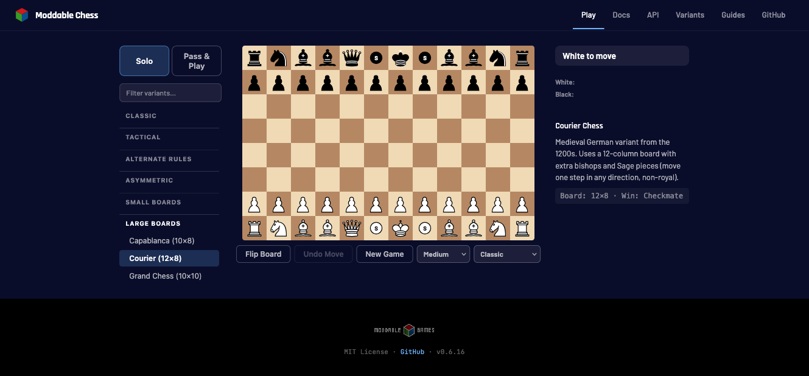
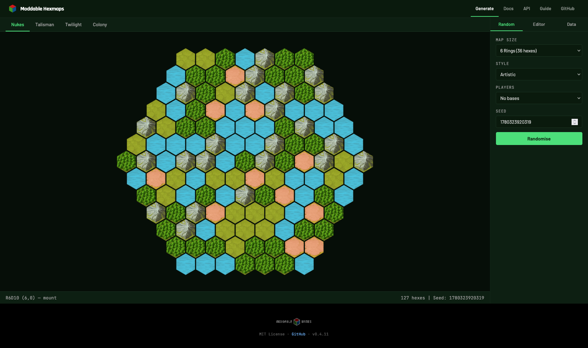

Have you ever tried to embed a chess game on a website? If you have, you probably reached for one of the established libraries: Chessboard.js, chess.js, Lichess's board component. They work, but what if you wanted Atomic Chess? Or Racing Kings? Or a variant where pieces can clone themselves? Suddenly you're forking entire codebases and fighting against architectures designed for one game.
That frustration is what led me to build Moddable Chess Engine, a modular engine that treats variants as first-class citizens. Once I had the architecture patterns right, it got me thinking about other problems I had, which ultimately led to the production of Moddable Hexmaps, a framework where any hex-based board game can be generated, edited, and shared with a URL.
Both shipped to production in 16 days. Both are MIT-licensed. Both were built using AI-augmented engineering workflows. Both now expose their capabilities as AI-callable tools via the first board game MCP server.

The Chess Engine: From 70 Variants to Consumer Game SDK to MCP Server
The Moddable Chess Engine started as a variant-first chess app: 70 playable variants on boards from 4x8 to 12x8, multi-depth AI with Web Worker threading, opening books, and variant-aware evaluation. Pure JavaScript, no dependencies, embeddable with a single iframe tag.
The first major evolution: the engine grew a consumer SDK (v0.9.1): renderer extension hooks, a reusable game controller, replay API, unit templates, terrain predicates, and effect lifecycle hooks. These aren't chess-specific. They're the primitives for building any turn-based game on top of MCE's move engine and AI. Native ESM throughout, no build step, same source files serve browser, Worker, and Node.js.
The proof is Dungeon Chess, an asymmetric skirmish game with 4 fantasy factions, dungeon terrain, water hazards, and XP-budgeted unit drafting. It runs entirely on MCE's consumer APIs. Custom tilePainter renders dungeon walls. Custom pieceProvider renders fantasy units. The game controller handles multi-faction turns. Zero engine forks. The chess engine became a game framework.
The second evolution: the engine became AI-callable. Seven tools (list variants, analyse positions, validate moves, generate puzzles, probe opening books) are exposed via MCP protocol at tools.moddable.games. Claude Desktop, Cursor, VS Code, and any MCP-compatible agent can connect with a single command. The same tools are available as a REST API for bots, dashboards, and integrations.
This is a DevRel problem as much as an engineering one. The question evolved from "can someone add a variant without understanding the engine?" to "can someone build a completely different game without forking?" to "can an AI agent use the engine without any human intermediary?" Each step meant investing in consumer-facing APIs, integration guides, and architecture that separates rendering, rules, and game loop.
- 70 playable variants — from Atomic Chess to Medusa Chess
- Consumer SDK (v0.9.1) — createGameController(), createReplay(), renderer hooks, unit templates, native ESM
- 7 MCP tools — variant analysis, puzzle generation, position evaluation, opening books, move validation
- AI with opening books — Web Worker search, 26 variant-specific books, 5 difficulty levels
- Developer guides — Build a Variant, Crazyhouse, Poison Chess, Building Dungeon Chess (consumer integration)

The Hex Map Framework: From Generator to Consumer SDK
Moddable Hexmaps solves a different problem: board game designers need maps, but designing them manually is tedious and sharing them is friction-heavy. What if every map had a URL? And what if that URL could be deterministically regenerated from a seed string?
The framework generates hex grids via Canvas (flat-top or pointy-top, at any ring count). It uses seeded RNG so the same seed always produces the same map. Six game configurations drive the generation: Nukes gets volcanic landscapes, Talisman gets 55 terrain types, Twilight Imperium gets 7 galaxy layouts, Colony gets Seafarers-style boards, Planet Mongo gets faction-clustered biomes, and Endless Skies gets 4X galaxy generation with wormholes and nebulae.
Like the chess engine, hexmaps grew a Consumer SDK (v0.8.1). HexApp.createMapController() enables iframe-free embedding with render hooks, event system, and full programmatic control. Multiple instances on one page work independently. The same pure functions that render maps in the browser also power 6 AI-callable MCP tools at tools.moddable.games, letting agents generate and analyse hex maps without a UI.
Maps export to JSON, PNG (2x resolution), PDF (A4 centred), and annotated SVG (with highlights, tokens, arrows, legends). Everything is controlled via URL parameters. Sharing a map is sharing a URL. Because everything renders client-side, there's no server cost regardless of how many maps people generate.
- Seeded procedural generation — same seed = same map, always
- 6 games supported — Nukes, Talisman Worlds, Twilight Imperium, Colony, Planet Mongo, Endless Skies
- Consumer SDK (v0.8.1) — createMapController(), render hooks, event system, iframe-free embedding
- 6 MCP tools — generate maps, analyse terrain, export SVG, all AI-callable
- 4 render styles — artistic, classic, kenney, realistic (per-game availability)
- Multi-format export — PNG, PDF, SVG with annotations, JSON state
The Architecture That Made It Possible
The reason this shipped in 16 days isn't velocity alone. It's that every architectural decision compounds. The variant plugin interface means adding a new chess variant is a single file. The seeded RNG means sharing a map is sharing a URL. The renderer hook system means Dungeon Chess didn't fork the engine. The postMessage API means any embed is controllable at runtime without rebuilding the iframe. Native ESM means the same source files serve the browser, Cloudflare Workers, and Node.js without a bundler.
Each decision removes future work. A plugin system that requires a fork isn't a plugin system. An embed that requires redeployment to change isn't embeddable. A game framework that can only make chess isn't a framework. An engine that needs a build step before an AI agent can use it isn't ready for the MCP world. The 16-day timeline is a consequence of getting these decisions right early, not of typing faster.
The full ecosystem: six games (Nukes, Mongo, Endless Skies, Dungeon Chess, Draughts, Go), two engines (chess v0.9.1 + hexmaps v0.8.1), a 190-page rulebook pipeline, 15 AI-callable MCP tools, Consumer SDKs for both engines, a developers section with API docs and examples, and the main site at moddable.games. All MIT-licensed, all statically hosted, all zero build-step dependencies.
The MCP Server: AI-Callable Game Engines
The most recent architectural leap: exposing both engines as AI-callable tools via the Model Context Protocol. A Cloudflare Worker at tools.moddable.games serves 15 tools (7 chess, 6 hexmaps, 2 site-native) over MCP, REST, OpenAPI, and llms.txt. Any MCP-compatible agent (Claude Desktop, Cursor, VS Code) connects with one command:
claude mcp add --transport http moddable-tools https://tools.moddable.games/mcpThis is the first board game engine MCP server. The tools are stateless, the Worker runs on Cloudflare's free tier, and the same pure functions that power the browser games power the AI tools. No translation layer. No separate API. The architecture that made both engines embeddable also made them AI-callable for free.
Try Them
Both engines are live, MIT-licensed, and waiting for someone to build something weird with them.
- moddable.games — the full ecosystem: engines, games, tools, developer docs
- chess.moddable.games — play any of the 70 variants right now
- hex.moddable.games — generate a map, grab the seed, share the URL
- tools.moddable.games — connect your AI agent to 15 game tools
- github.com/Moddable-Games — everything is open source